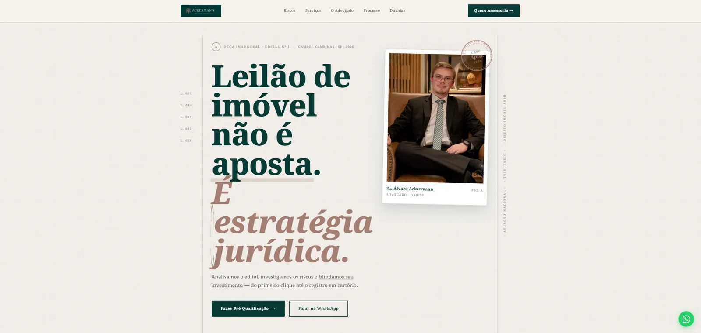
Ver ao Vivo — Ackermann Advogados · Leilões de Imóveis
Ackermann Advogados · Leilões de Imóveis · Landing page editorial
Dublin, Ireland
Disponível · Remoto (BR & Global) · Presencial em Dublin / Europa
Desenvolvedor Web especializado em criar soluções digitais robustas e elegantes.
Sites institucionais e landing pages que desenvolvi do design ao deploy. Arraste para o lado ou use as setas para conhecer cada projeto.

Ackermann Advogados · Leilões de Imóveis · Landing page editorial
Cícero Neri · Landing page para consultoria comercial
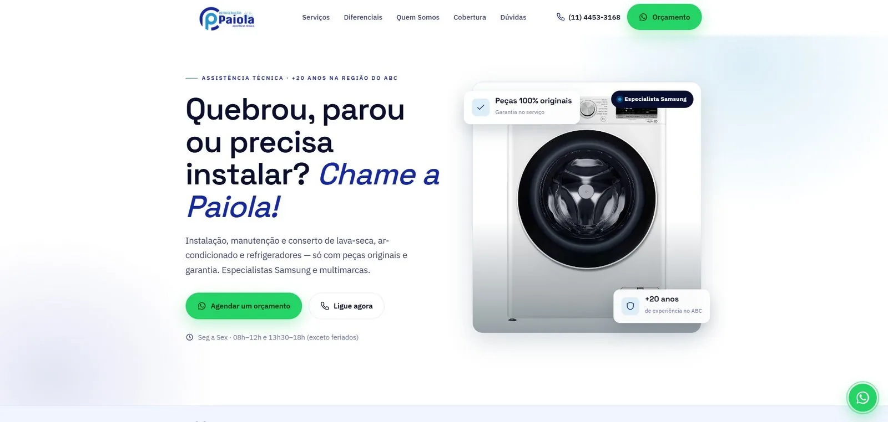
Refrigeração Paiola · Site institucional para assistência técnica
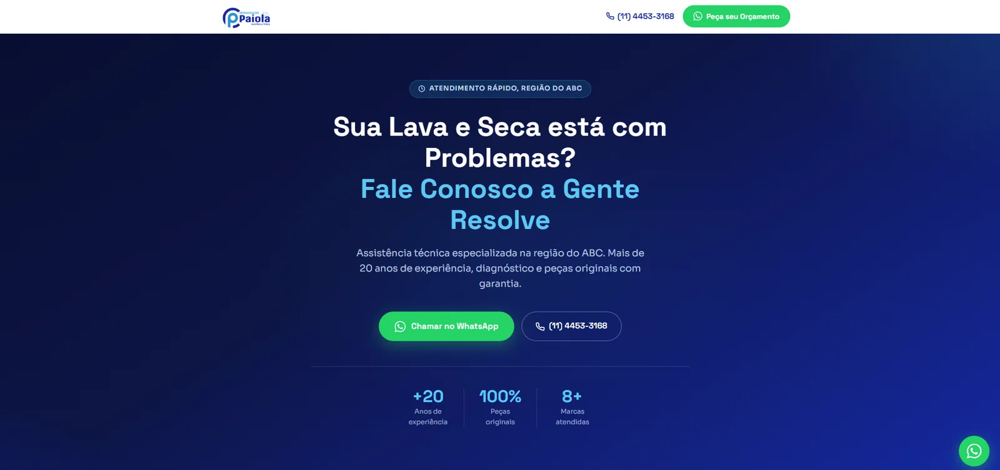
Paiola Lava e Seca · Landing page para captação de orçamentos
CDC Campinas · Landing page de evento para profissionais da saúde
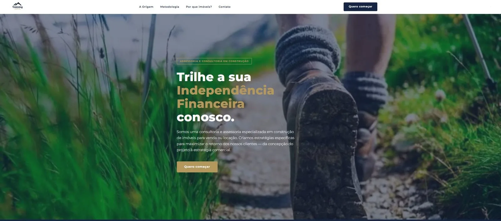
Trekking Capital · Site para assessoria em investimentos imobiliários
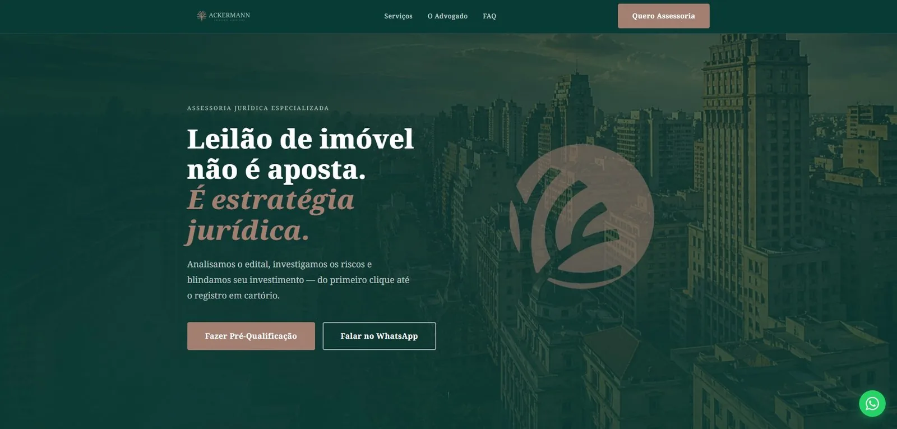
Ackermann Advogados · Landing page para escritório jurídico
AP Soluções Humanas · Site institucional para consultoria de RH
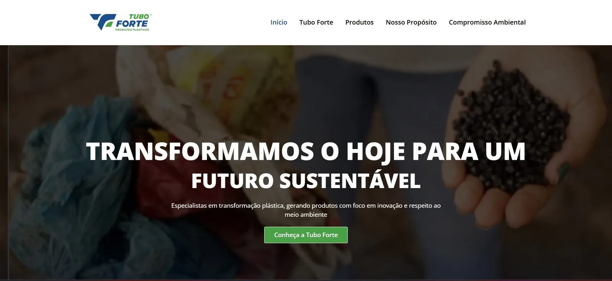
Tubo Forte Plásticos · Site institucional e catálogo B2B
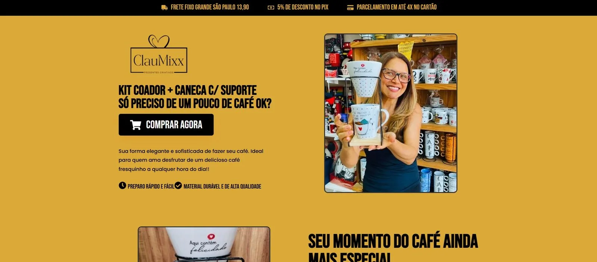
ClauMixx · Landing page de vendas para lançamento de produto
Dra. Larissa Ramalho · Landing page para captação de pacientes
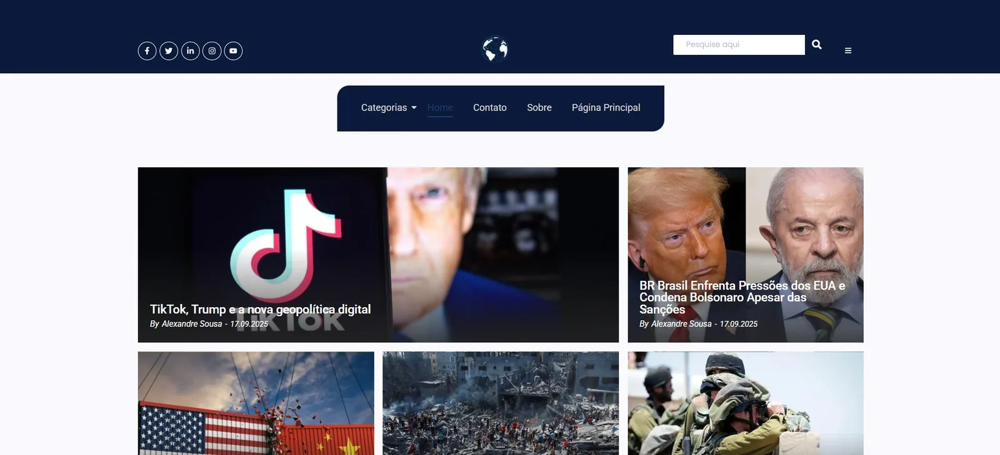
Blog Mundo Geopolítico · Blog com arquitetura de conteúdo para SEO
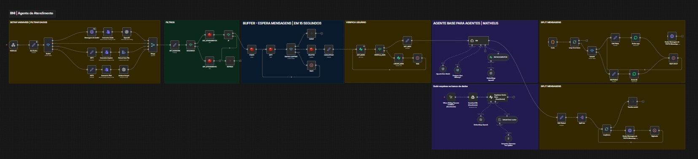
Desenvolvimento de um agente de atendimento virtual para o BNI, utilizando n8n para orquestrar fluxos de trabalho e integrar com a API do WhatsApp (Evolution API). O agente responde perguntas frequentes sobre membros do BNI, com todos os dados armazenados no Supabase/PostgreSQL.
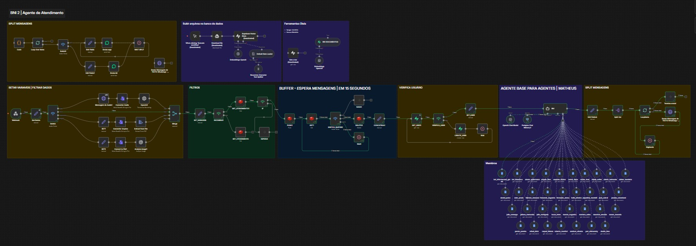
Evolução do agente de atendimento BNI com melhorias significativas na compreensão e resposta às consultas. Integração com Google Docs para acesso direto às informações dos membros, prompt refinado para reduzir alucinações e aumentar precisão, com orquestração via n8n.
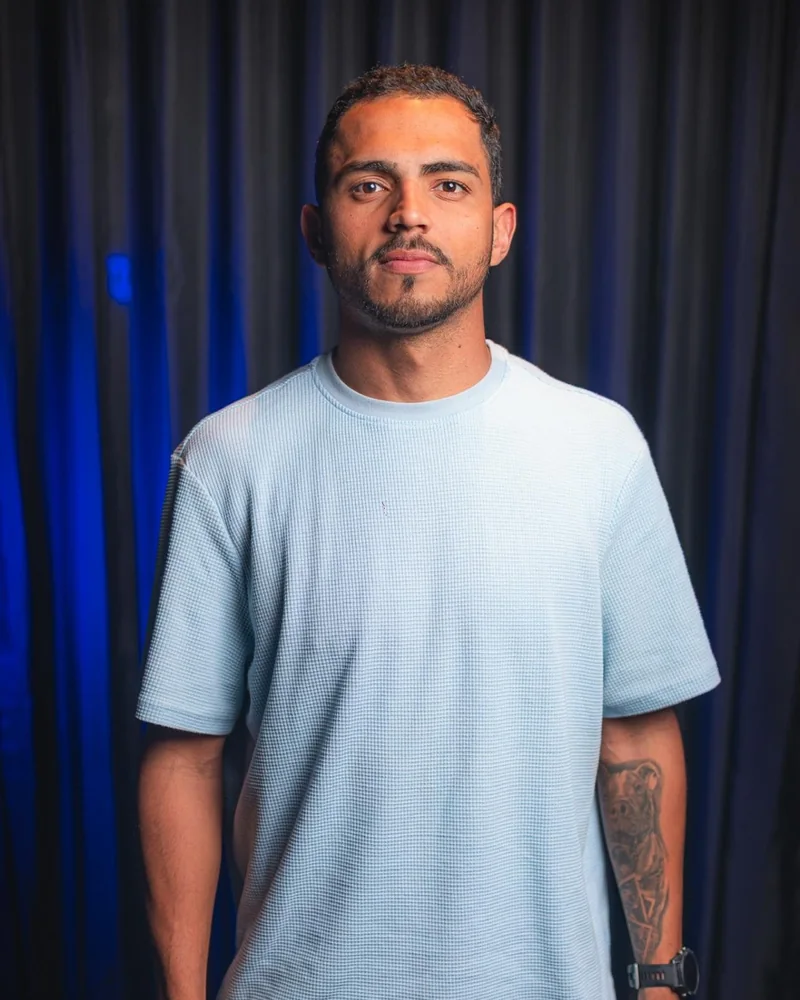
Sou o Matheus, desenvolvedor full-stack. Construo aplicações web, sites e automações com IA, do banco de dados ao deploy.
Meu maior projeto até agora é o Sistema ID22. Transformei a planilha que uma agência digital usava para controlar clientes e domínios em uma plataforma em Next.js e Supabase que monitora 28 sites e envia alertas pelo WhatsApp. Na mesma agência, entreguei 25 sites, landing pages e e-commerces, além de agentes de IA que atendem leads 24 horas por dia.
Cheguei à tecnologia por um caminho pouco comum. Sou formado em Direito, e uma temporada em Londres me fez perceber que eu queria construir coisas, e não só dar parecer sobre elas. De volta ao Brasil, comecei pelo e-commerce da família, criando landing pages, automações e campanhas com resultados que eu conseguia medir.
Hoje moro em Dublin e estou aberto a vagas full-stack e de automação, remotas ou presenciais. Gosto de código limpo, interfaces simples e soluções diretas. Fora do trabalho, corro maratonas.
Estou sempre aberto a novas oportunidades e colaborações, e posso ajudar através de projetos práticos já implementados que unem a eficiência da automação com a excelência do desenvolvimento web. Implemento agentes de IA que utilizam o N8N para orquestrar fluxos de trabalho e responder ao WhatsApp de forma inteligente, gerenciando a triagem inicial de leads e fornecendo respostas rápidas.
No front-end, crio sites e landing pages de alta conversão usando Elementor, complementando-os com a configuração e gestão de envio de Email Marketing e pela criação de blogs estratégicos que atraem tráfego qualificado. Em e-commerce, administro plataformas como Loja Integrada e Tray Commerce, garantindo a estabilidade e performance da loja, além de cuidar da administração de hospedagem e do desenvolvimento de scripts específicos para otimização de tarefas e integração de sistemas.
Para completar, desenvolvo e-books e tutoriais de suporte técnico que não apenas capacitam clientes e equipes, mas reduzem a demanda por suporte recorrente, melhorando a satisfação e a eficiência operacional. Eu transformo suas ferramentas em um ecossistema de crescimento e minha proposta é clara: usar tecnologia de ponta para automatizar o que é repetitivo e focar no desenvolvimento do que é estratégico.